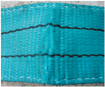
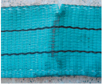
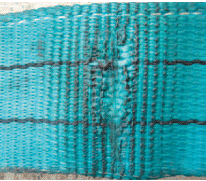
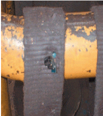
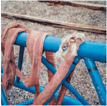
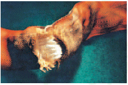

Gewebte Hebebänder aus Chemiefasern sind der Benutzung zu entziehen bei
Garnbrüchen/Garnschnitten im Gewebe von mehr als 10 % des Querschnittes des Hebebandes (Bild 4-1),

Bild 4-1: Unzulässiger Einschnitt an der Oberfläche
Beschädigung der tragenden Nähte (Bild 4-2),

Bild 4-2: Unzulässiger Einschnitt an der Hebekante
Verformung durch Wärmeeinfluss wie Reibung, Strahlung, usw. (Bilder 4-3 und 4-4),

Bild 4-3: Durch Wärmeeinfluss beschädigte Oberfläche

Bild 4-4: Durch heißen Span beschädigte Oberfläche
Schäden infolge der Einwirkung aggressiver Stoffe.
Rundschlingen aus Chemiefasern sind der Benutzung zu entziehen bei
Beschädigung der Ummantelung bzw. ihrer Vernähung mit sichtbarer Beschädigung der Einlage (Bild 4-5),

Bild 4-5: Starke Beschädigung der Ummantelung und der Einlage
Verformung durch Wärmeeinfluss wie Reibung, Strahlung, usw. (Bild 4-6),

Bild 4-6: Beschädigung durch Hitzeeinwirkung
Schäden infolge Einwirkung aggressiver Stoffe.
Anschlagmittel aus Chemiefasern mit Beschlagteilen sind der Benutzung zu entziehen, wenn die Beschlagteile Verformungen, Anrisse, Brüche oder andere Beschädigungen aufweisen.